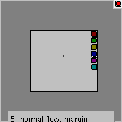

Quirky Percentages in IE6's Visual Formatting Model
As of 2008, IE7 shows some improvement for the problems described below, but many inconsistencies still remain.
The :hover-experience
In August 2004, Roger Johansson sent a test case to the css-discuss mailing list, stating that he could not find any mention of this odd IE/Win problem.
The text. This will jump to the left when the link is hovered over.
1: The IE jump on hover.
Although I couldn't understand the reason for this jump on hover, I posted some more test cases on the discussion thread. It was Bruno Fassino who had the idea that the wrongly computed margins are obtained by applying the percentage not to the container width, but to the body width. At first I thought (as is usual, you need to be careful when dealing with floats in IE) the problem should have been already known and therefore easy solution, such as giving it a "hasLayout"-dimension, should resolve it. Far from it.
B
The code lines provide information about the relevant structure and allow to build an example skeleton (XHTML strict) step by step. Sequences B and H are showing bits and pieces with percentage paddings, margins, and nested dimensioned wrappers and are of course not seriously meant. As of this writing, Opera suffers from floating problems and Geckos may have some rounding errors.
Remark: The following material might be a strain on sensible CSS designers who have to code for IE6.
The expanding visual formatting model of IE6
A page's rendering has a time dimension. Position and measurements of elements are computed in the page flow.
In IE6, a length will be expanded on demand, this does not correspond to the specification of min-height or height, neither min-width nor width. Regarding siblings, the first will cause the offset for the second. Two siblings at block-level side by side, where the lengths exceed the overall width of the parent: IE will just expand the parent (compare C7 in a standards compliant browser). Measurements of an element are not known until after all child elements have been processed, since at runtime it is still not determined as to whether it has to be expanded or not. They are computed out of themselves, height and width refer to 'intrinsic height' and 'intrinsic width', and these are indetermined during page flow.
Percentages challenge IE's formatting model
The percentage is calculated with respect to the width of the generated box's containing block. ...(CSS2.1: 10.2). An example: a margin of an element shall come to 5% of it's parent's width. So, this is simple ... but no, IE does not know at render time about the final width of it's containing block. So what now?
It is impossible to compute a percentage from the unknown (and how easy it would be just to take the width specified by the designer, but alas no). We can see and worry about the logical flaw in IE6's formatting model that is revealed by percentages.
... If the containing block's width depends on this element's width, then the resulting layout is undefined in CSS 2.1 – this would read clearly: The resulting layout using percentage values is undefined in IE6.
1: playground: defined lenghts of ancestor and parent, introducing the bug crew.
2: normal flow, margin-left:5%
3: normal flow, margin-left:10%
4: normal flow, margin-left:25%
5a: normal flow, margin-left:50%

5b: normal flow, margin-left:50%, doubled-wrapper
6: float flow, margin-left:5%
7: normal flow, parent>ancestor, margin-left:10%
8: normal flow, parent>ancestor, margin-left:50%
At first sight, IE6 seems to take the width of the containing block (silver 'parent') as indetermined. Well, regarding the CSS specification, this relative value should be calculated referring to the width of the nearest dimensioned ancestor element (grey 'ancestor')– as if there wasn't any dimensions set for the parent. I wonder why this ancestor value suddenly becomes a 'determined' one and not an 'indetermined' for IE, due to the fact it could balloon too, but then this would make any percentage completely useless in the cascade.
While page flow, percentages on margins skip one generation in IE.
Children respect their grandparents.
In this sequence, the percentages refer to the partly liquid white sheet of this page ("parent" has no dimension, "ancestor" has, but is skipped due to the bug in question, the sequence "D"-element is undimensioned, so, at least, the white sheet is the "next dimensioned ancestor"). The initial miscalculation changes with the size of the viewport.
1: playground: defined lenghts of ancestor, intrinsic dimensions of parent
2: normal flow, margin-left:0
3: normal flow, margin-left:5%
4: normal flow, margin-left:10%
5: normal flow, margin-left:20%
6: float flow, margin-left:5%
To make it worse, this is not static. As said above, page flow follows a time dimension. In time, intrinsic lengths become determined when the containing block is rendered.
The reflow
Assume the page flow is done, all the elements are processed. If a part of the construct has to be redrawn – this is necessary in a hover-transition with a background's change – with this at least a determined length is used. Now (now!), a percentage calculation follows the specification: ... with respect to the width of the generated box's containing block, but not until the page rendering is complete. There is a state pre- and post-page-flow.
Compare this situation with an element relatively positioned: The box's position is calculated according to the normal flow ... Then the box is offset relative to its normal position (CSS2.1: 9.3.1). Then -- the normal flow is processed, therefore, percentages for relative offsets are correct, as are margins in hover-transitions.
Hovering induces a reflow in the neighborhood of an element. Combined with percentages, it is just too awful for words. User agents are not required to reflow a currently displayed document due to pseudo-class transitions (CSS2.1: 5.11.3). Yes, but please, they shouldn't really do this unless they know what they are doing.
What exactly is happening while a reflow occurs? I do not really know. At the moment, I think the nearest ancestor block which has a dimension is dissolved. Its dimensions, though known, are set to indetermined. All descendants are redrawn, as are all following siblings. For inline-level-elements, only the preceding line-box is redrawn with the element, that absurdly results in a last lines' indent, even if it's in the preceding paragraph (F1).
That's all the magic in the flip-flop circuit of the red reflowbutton in the example sequences: Though the absolute lengths are all known – the page is currently displayed – the sequence is reflowed, making the same old wrong assumptions about indetermined dimensions as discussed again: back to start.
It is the consequence of this 'quirky' model: the hover-transition could have forced an element to blow up, so the neighborhood is affected and so loses its 'determined dimensions state'.
The nature and character of the bug
Both IE6 in quirks mode and IE5 do not have such problems with percentages. Is it the miserable failure in implementation of a standards compliant box model in IE6? So, they corrected IE's box model problem in IE6, but was it the right time?
Besides the wrong positioning, and the consecutive jumping on hover, the percentage sequences offer various awful unintended effects:
multiple phantom background boxes (H)
disappearing or split backgrounds (E2)
duplicated characters (G) and spurious content (uncollapsing in D6)
misplaced or wrapped focus outline boxes and clickable regions (C, D)
The last point is unmasking: when you focus a link with the tab key, the grey dotted box (aka selection rectangle, focusing ring) outlines the content area and the left margin area of inline-level elements. This outline width area of the left margin is correct (!), but there is an offset to the content area (tab to C4/5 – see screenshot C5a – and watch the outline's position while the bugs are jumping and what happens on reflow, or gently move the pointer between the outline and the content from above and from below).
The bug is the incorrect relation during page flow, whereas the jump and the other aspects are consequences.
Approaching the real world – why this ain't funny
The client calls saying your on-deadlines' work doesn't work, and you can't reproduce it on your environment: when it provides some obvious jumping in the menu (E1, E2), you are lucky, but mostly this bug will show only a rat's tail: perhaps in the form of a little gap due to a wrapping of a misplaced selection-box, maybe in form of some volatile additional content.
The percentage bugs on paddings and on margins are quite similar - on the surface. It depends on whether the element's Microsoft-proprietary "hasLayout" property is set to true or false:
False (default):
The percentage skips one generation ("extroversion"). A hover-transition induces a reflow-jump to the expected position.
True (width is set/ height is set/ display: inline-block etc.):
The percentage is calculated correctly. A hover-transition induces a reflow-jump to a wrong position as the percentage refers to the element itself ("introversion") at this moment.
The dilemma is, that the application of hasLayout via the Zoom Fix (or any other method) leads to another problem.
We jump out of the frying pan into the fire (F5). And doubled wrapping, another possible workaround, fails too: A second containing block with the same dimensions
as the parent is of no use when the element's padding is referring to the element's width (F6). So you'll have to omit hover-transitions when dimensions are set.
Ironically both alternatives of "hasLayout" reveal a relational skip: to the ancestor or to itself, but not to the parent where the reference belongs.
Are there workarounds?
You knew it, this is the section for bad news.
Doubled-wrapper:
Given an additional wrapper with the parent's dimensions, a child will calculate its percentages with respect to the wrapper (C5b, F4). This will not cure the introverted hover-jump on paddings (F6).
hasLayout = True:
Use the Zoom Fix where pure intrinsic lengths produce unforeseeable results,
or set display: inline-block where appropriate.
Does work on paddings only (F2, F3) and you'll have to omit changing backgrounds on hover.
Abstention from hover-transitions:
Avoids the jumping, but not the offset's miscalculation.
Abstention from relative values:
This seems to be the current de-facto-workaround (however, in the assumption IE is imprecise).
Quirks mode:
Well, perhaps, yes perhaps.
Expressions:
margin-left: expression(this.parentNode.offsetWidth / 10 + 'px'); is equivalent to margin-left: 10%;. This seems to be a (desperate) cure. The relation is fixed by explicitly referring to the parent.
A side note
In all the examples, the links are positioned, some are block level, as image replaced elements, or flowed – this is in order to make the problem visible and reproducible. But if you'd simply join two text links side by side, give them a percentage margin, with a :hover-effect, nothing obscure would happen ... really?
G
The nonfloatet, nonpositioned, nonreplaced pure normal-flow inline characters example. I hope it is reproducible on your monospaced font settings.
1: Five links with margin-left:3% and a string of five chars and whitespaces.
XXXXX a b c d e f g h i j k l m n o p q r s t u v w x y z
2: margin-left:10%
Well, in G1, the links do not jump, but the following string will be affected by duplicating chars in the next line box. Or in G2, which is quite similar, only the margin is a little bit wider, the links are jumping, the parent is ballooning – but: the alphabet's wrapping in the next line boxes are not affected. So, the consequences depend on the amount of the percentage error. In G1, the error can not be seen on the links, but indirectly: the actual line box is well, but there was something causing a wrapping of the first line box' content into the second one as if the percentage bug has occurred on the links and hasn't sufficiently covered up its tracks, leaving duplicate characters.
Artefacts
While working on the examples, I often saw something I named "multiple phantom background boxes". I stand corrected, I had used subsets of "class" values, but IE6 doesn't support this well.
The rule was intended to match elements whose "class" attribute has been assigned a list of values that includes "menulink" and "no1" (see sequence E). But in IE, .menulink.no1 degrades to .no1, matching any occurance of it. So the background color in C, D was applied to the link and to the transparent image inside of it.
Anyway – this does not explain why the background boxes are repeated. A domino effect in redrawing the preceding line-box? Let's hope this one does not show up in the real world, but if so, display: inline-block fixes the phantoms (and avoids losing backgrounds), but not the miscalculation.
Is a percentage-width computed correctly, and does its element behave as expected?
What exactly restricts the reflow?
What about other relative values (em, ex)?
I'd love to hear from your experiences and solutions, friends.
I
Sometimes I think that there is a self-organizing structure in the complex dynamics of bugs. Every set seems to have its fractal geometry referring to the whole thing.
For their help in reviewing this article, I would like to thank Bruno Fassino, Roger Johansson, David Batty, and Big John.